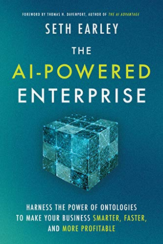

AWS, Azure and Google Cloud will be the "big 3" players (in North America) for the foreseeable future. However, we now regard Oracle Cloud Infrastructure (OCI) as a strong number 4. OCI competes strongly on price, but has a limited number of services compared to the others.
One observer of the cloud platforms is Bob Evans. He runs a site called Cloud Wars.
A strking feature of the Cloud Data Platforms is the continuous improvement of the offerings and the strong competition among the vendors.
Every product now supports, in some way, separation of compute and storage, or independent scaling of compute and storage. This leads to a major reduction in TCO of running a large system.
Support for Open Table Formats has been increasing steadily. Delta, developed by Databricks, is fully open source and used by other vendors. Apache Iceberg has strong support by numerous vendors. See this medium post for orientation.
Most of the vendors that we discuss have some features specific to certain industries. Competition remains fierce among the platform vendors on a feature-by-feature basis. Add industry-specific features, and in come cases, industry-specific knowledge from Professional Services consulting teams, provides another path toward a differentiated offering.
There is currently much excitement about the new capabilities offered by Large Language Models. Many of you are considering how to make use of these new capabilities within your companies.
This is a very rapidly evolving field. However, some guiding principles may be obverved. In order to look beyond the hype and noise that is generated in this field, it's necessary to do some study, either by focused reading, or by getting some training.
Much of the attention has focused on the activities of very large vendors. These vendors are using Large Language Models (LLM's) to power Chat-enabled applications such as ChatGPT and Bard.
For some background on Foundation Models and Large Language Models,
see here.
Two points are important here.
First, training a LLM requires extensive hardware resources,
and a team of experts. This will remain beyond the reach of most enterprises.
Second, the cloud vendors and Business Intelligence vendors are bringing to market
tools to help enterprises make use of Foundational Models that also incorporate current,
local data from with the enterprise.
The cloud vendor tools cover a wide range of use cases, working with natural language (text), images, or videos. Some tools require little or no coding experience, relying exclusively on pre-built models. Others require moderate to high level of expertise with machine learning theory and engineering.
For project leads, architects, developers, and for certain executives, we recommend training in this field. Two appropriate trainings are listed here, check with your preferred cloud vendor for other training resources. The courses listed here are both excellent for learning the fundamentals in this field. They are provided by cloud vendors, but should be of use to anyone on any cloud. Each course can be audited at no cost, and full enrollment, with graded labs, is available via a low-cost subscription.
Generative AI learning path on Google's skillsboost learning platform.
Generative AI with Large Language Models (LLMs) from deeplearning.ai (Coursera)
The choice of which technology and which platform and which tools within the platform will vary strongly according to the use case. Training an LLM from scratch is beyond the means of most enerprises. So, look into the methods for training Small Language models, or fine-tuning a frozed Foundation Model. Research parameter-efficient fine tuning and other approaches to incorporate current, local data into the models.
Many authors have commented on the need for high quality of the data to be used for fine-tune training of language models. Many enterprises continue to struggle with data quality issues. AI models tend to expose data quality problems rather than repair them. Before undertaking a large effort to train Foundation Models, a candid assessment of data quality should be undertaken.
The building of a Knowledge graph or ontology can make Generative AI much more useful. See this book by Seth Earley.
 The AI-Powered Enterprise: Harness the Power of Ontologies to Make Your Business Smarter, Faster, and More Profitable